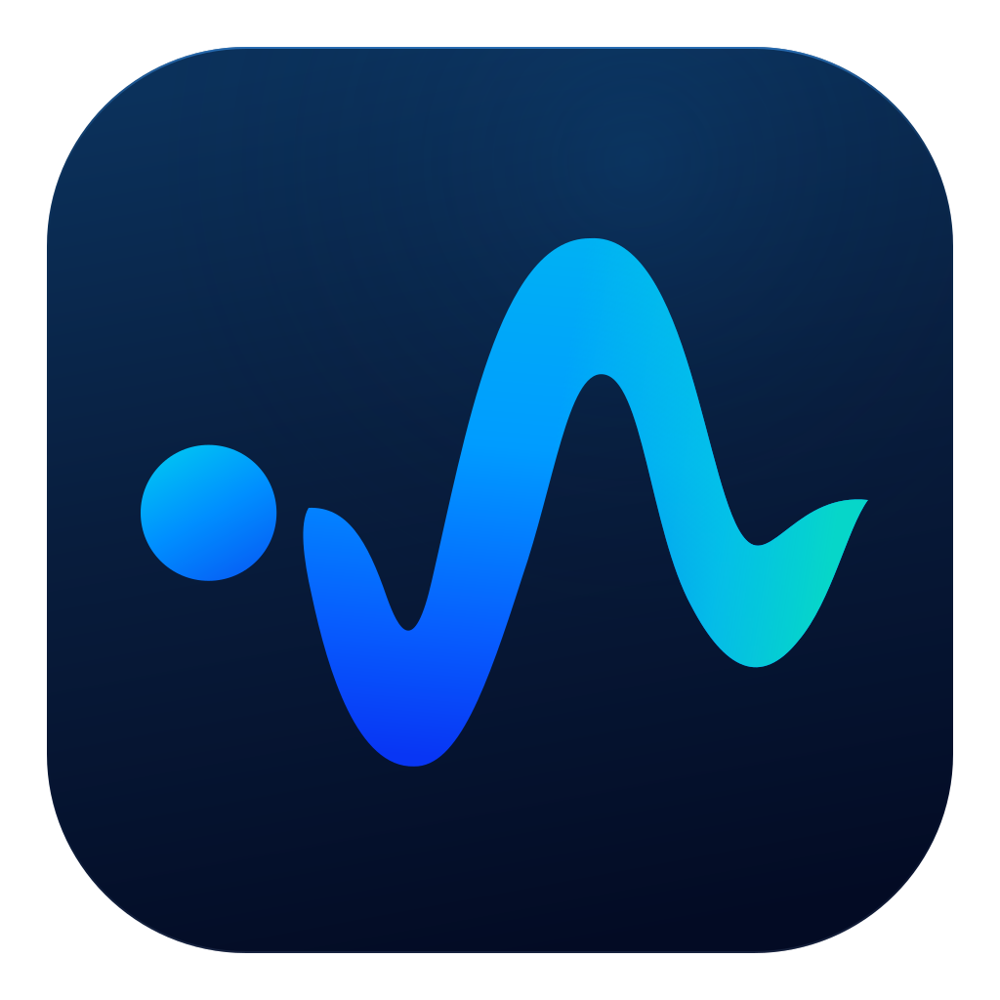

FluxLLM · the tall waveform
The approved waveform supplies the app icon, transparent headers, and menu mark. Menu and header artwork use the same unoutlined blue/cyan gradients. All artwork is rendered directly from vector paths.
Preserved: detached dot, tall crest, deep left trough, smaller right trough, and blue/cyan gradients. Every size reuses the same contour. Header and menu artwork have no tile or shadow; only the app icon uses the navy tile.
Enlarged comparison
FluxLLM app icon

Reference status crop · 4×
Unoutlined status mark · transparency check
24 × 18 point menu-mark test
Keep browser zoom at 100%. Each mark is exactly 24 × 18 CSS pixels. These are simulated surfaces, not screenshots of an integrated app. The first column uses the 1× PNG; the second uses the 2× PNG at the same logical size.
Light · 1× representation ≈31.7 t/s
≈31.7 t/s Light · 2× representation ≈31.7 t/s
≈31.7 t/s Dark · 1× representation ≈31.7 t/s
≈31.7 t/s Selected Light · 1× representation≈31.7 t/s Selected Light · 2× representation≈31.7 t/s Selected Dark · 1× representation≈31.7 t/s Selected Dark · 2× representation Warm · 1× representation≈31.7 t/s Warm · 2× representation≈31.7 t/s Blue · 1× representation≈31.7 t/s Blue · 2× representation≈31.7 t/s The menu mark has no outline in light, dark, or selected appearances. Its 24 × 18 point size, blue/cyan fill, and original contours are preserved. Historical outline comparison.
48 × 36 point transparent header mark
The header uses the original blue/cyan gradients without an outline on both light and dark surfaces.
Light · 1× representationFluxLLM
Light · 2× representation FluxLLM
FluxLLM Dark · 1× representation FluxLLM
FluxLLM Dark · 2× representationFluxLLM
App icon at native sizes
16 × 16
32 × 32
64 × 64
128 × 128
Exports prepared
Light 1× · Light 2× · Dark 1× · Dark 2× · App icon 1024 px · macOS .icns
Wave-only branding was requested and approved for integration. These artwork proofs do not confirm an app build or on-device validation of alignment, appearance switching, menu behavior, metrics, or Quit.